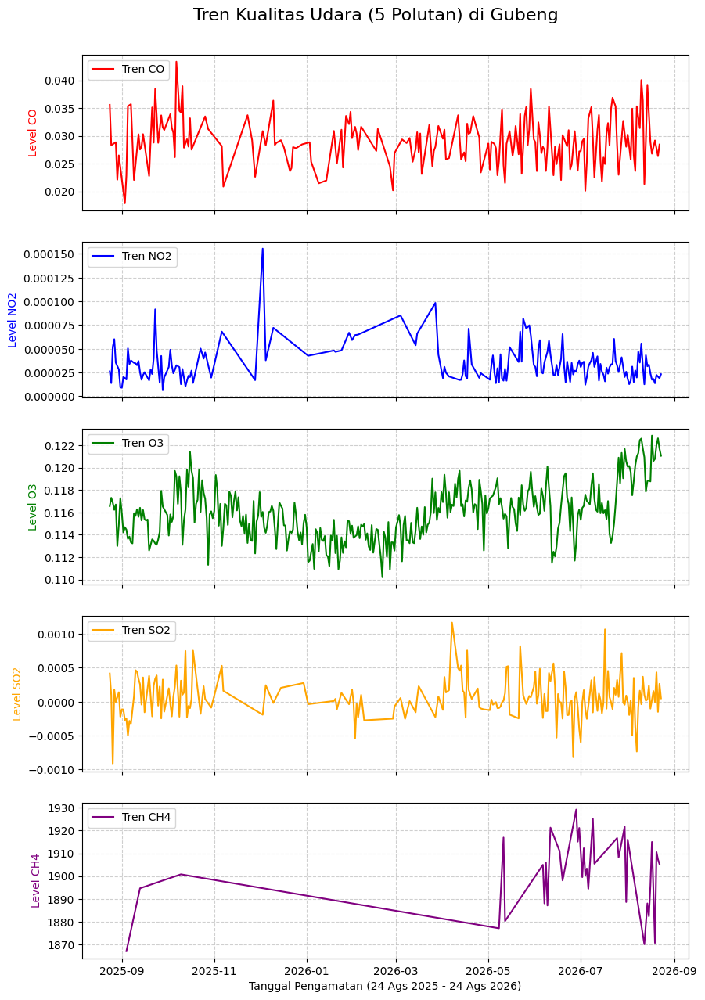

Analisis Time Series Karbon Monoksida (CO) Tingkat Kecamatan di Kota Surabaya Menggunakan TSFEL#
1. Business Understanding#
Latar Belakang dan Tujuan Penelitian#
Penelitian ini bertujuan untuk menganalisis dan memodelkan kualitas udara di wilayah Kecamatan Gubeng, Kota Surabaya, Jawa Timur. Observasi dilakukan menggunakan data spasio temporal berbasis satelit yang direkam selama rentang waktu satu tahun, terhitung sejak 24 Agustus 2025 hingga 24 Agustus 2026. Jendela waktu observasi ini menghasilkan 365 titik data harian (baris data) untuk setiap metrik kualitas udara. Tujuan akhir dari studi ini adalah memanfaatkan Time Series Feature Extraction Library (TSFEL) untuk mengekstraksi 68 fitur dari data deret waktu polutan, guna mengidentifikasi pola, karakteristik, dan anomali kualitas udara secara komprehensif.
Ruang Lingkup dan Skenario Pengolahan Data#
Proses pengumpulan data awal melibatkan ekstraksi lima parameter gas polutan, yaitu CO, NO2, O3, SO2, dan CH4. Pada fase Data Understanding dan prapemrosesan, seluruh variabel dari kelima polutan tersebut akan dievaluasi, ditransformasi, dan dibersihkan guna memastikan integritas serta validitas dataset secara keseluruhan.
Meskipun pembersihan data dilakukan pada seluruh parameter, batasan masalah pada penelitian ini menetapkan bahwa tahapan analisis lanjutan termasuk ekstraksi 68 fitur TSFEL dan pemodelan akhir hanya akan difokuskan pada variabel Karbon Monoksida (CO). Keempat polutan lainnya dipertahankan pada tahap awal sebagai pemenuhan spesifikasi penugasan sebelumnya dan untuk memberikan konteks kondisi atmosfer secara umum.
Deskripsi Parameter Polutan#
Variabel polutan yang tercakup dalam dataset observasi wilayah Gubeng meliputi:
CO (Karbon Monoksida): Merupakan variabel target utama untuk ekstraksi fitur TSFEL. Gas ini umumnya mengindikasikan tingkat emisi dari pembakaran tidak sempurna dan aktivitas antropogenik.
NO2 (Nitrogen Dioksida): Polutan primer yang bersumber dari aktivitas emisi bahan bakar, digunakan sebagai indikator tambahan tingkat polusi udara ambien.
O3 (Ozon Permukaan): Polutan sekunder hasil reaksi fotokimia di atmosfer yang dipengaruhi oleh intensitas radiasi matahari dan gas prekursor di wilayah observasi.
SO2 (Sulfur Dioksida): Parameter yang mengindikasikan keberadaan emisi berbasis sulfur, baik dari aktivitas pembakaran maupun sumber eksternal lainnya.
CH4 (Metana): Emisi gas rumah kaca yang relevan untuk diamati pada wilayah perkotaan, yang dapat berkaitan dengan aktivitas domestik maupun sumber emisi lainnya.
2. Data Understanding#
Pada tahap ini, kita akan mulai mengumpulkan data, mulai dari menarik data, kemudian kita akan mengupas data tersebut, sehingga kita dapat memahami secara utuh data apa yang sedang kita gunakan saat ini.
Mengumpulkan Data#
Kita akan menghubungkan Copernicus dengan koordinat Kecamatan Gubeng yang sudah kita ambil dari geojson batas administrasi wilayah Kota Surabaya.
Data yang akan digunakan berasal dari Sentinel-5P dengan periode pengamatan selama satu tahun, yaitu mulai dari 24 Agustus 2025 sampai 24 Agustus 2026. Pada tahap pengambilan data ini, terdapat lima parameter polutan yang digunakan, yaitu CO, NO2, O3, SO2, dan CH4.
Setiap parameter akan diambil berdasarkan wilayah Kecamatan Gubeng sebagai Area of Interest (AOI). Data yang diperoleh dari Sentinel-5P kemudian akan diagregasi berdasarkan waktu menjadi data harian agar tidak terdapat banyak observasi dalam satu hari. Selain itu, dilakukan agregasi spasial menggunakan nilai rata-rata pada wilayah AOI Kecamatan Gubeng sehingga diperoleh data deret waktu yang mewakili kondisi masing-masing polutan pada wilayah penelitian.
Setelah proses agregasi selesai, data untuk masing-masing polutan akan dijalankan melalui batch job pada Copernicus. Hasil pengambilan data kemudian disimpan dalam format NetCDF (.nc) untuk digunakan pada tahap pengolahan berikutnya.
import geopandas as gpd
import folium
import os
# Folder data mentah
folder_raw = r"C:\Users\Alif\ProyekSainsData\data\raw"
# Folder gambar
folder_img = r"C:\Users\Alif\ProyekSainsData\img"
# 1. Membaca batas administrasi kecamatan
path_shp = os.path.join(
folder_raw,
"11032026_batas_kec",
"11032026_BATAS_KEC.shp"
)
gdf_kecamatan = gpd.read_file(path_shp)
# 2. Mengambil Kecamatan Gubeng
gdf_gubeng = gdf_kecamatan[
gdf_kecamatan["K"].str.upper() == "GUBENG"
].copy()
# Mengubah sistem koordinat menjadi WGS84
gdf_gubeng = gdf_gubeng.to_crs(epsg=4326)
# 3. Definisikan AOI Kecamatan Gubeng
aoi = {
"type": "FeatureCollection",
"features": [
{
"type": "Feature",
"properties": {},
"geometry": gdf_gubeng.geometry.iloc[0].__geo_interface__
}
]
}
# 4. Titik tengah fokus peta
center = gdf_gubeng.geometry.iloc[0].centroid
center_lat = center.y
center_lon = center.x
# 5. Buat peta dasar dengan fitur interaktif yang dimatikan
m = folium.Map(
location=[center_lat, center_lon],
zoom_start=13,
tiles="OpenStreetMap",
zoom_control=False,
scrollWheelZoom=False,
doubleClickZoom=False,
dragging=False,
boxZoom=False,
keyboard=False
)
# 6. Tambahkan poligon AOI ke peta
folium.GeoJson(
aoi,
name="Alif_AOI_Gubeng_Surabaya",
style_function=lambda feature: {
"fillColor": "#ff4d4d",
"color": "#cc0000",
"weight": 3,
"fillOpacity": 0.4
}
).add_to(m)
# 7. Simpan peta sebagai HTML
file_peta = os.path.join(
folder_img,
"Alif_01_AOI_Gubeng_Surabaya.html"
)
m.save(file_peta)
print(
f"Peta berhasil disimpan menjadi "
f"'{os.path.basename(file_peta)}'"
)
# Tampilkan peta
m
Peta berhasil disimpan menjadi 'Alif_01_AOI_Gubeng_Surabaya.html'
import openeo
# Menghubungkan ke Copernicus Data Space Ecosystem
connection = openeo.connect(
"openeo.dataspace.copernicus.eu"
).authenticate_oidc()
Authenticated using refresh token.
pollutants = ["CO", "NO2", "O3", "SO2", "CH4"]
datacubes = {}
# Mengambil data Sentinel-5P untuk lima parameter polutan
for pol in pollutants:
datacubes[pol] = connection.load_collection(
"SENTINEL_5P_L2",
temporal_extent=["2025-08-24", "2026-08-24"],
spatial_extent={
"west": float(gdf_gubeng.total_bounds[0]),
"south": float(gdf_gubeng.total_bounds[1]),
"east": float(gdf_gubeng.total_bounds[2]),
"north": float(gdf_gubeng.total_bounds[3])
},
bands=[pol]
)
print("Data polutan berhasil disiapkan:")
print(pollutants)
Data polutan berhasil disiapkan:
['CO', 'NO2', 'O3', 'SO2', 'CH4']
# Mengagregasi data berdasarkan hari
# agar diperoleh satu nilai rata-rata untuk setiap hari
for pol in pollutants:
datacubes[pol] = datacubes[pol].aggregate_temporal_period(
reducer="mean",
period="day"
)
# Mengagregasi secara spasial berdasarkan AOI Kecamatan Gubeng
for pol in pollutants:
datacubes[pol] = datacubes[pol].aggregate_spatial(
reducer="mean",
geometries=aoi
)
print("Agregasi temporal dan spasial selesai.")
Agregasi temporal dan spasial selesai.
jobs = {}
for pol in pollutants:
jobs[pol] = datacubes[pol].execute_batch(
title=f"Alif_{pol}_Gubeng_Surabaya",
outputfile=f"Alif_{pol}_Gubeng_Surabaya_Raw.nc"
)
print("Batch job berhasil dibuat untuk seluruh polutan.")
0:00:00 Job 'j-260917180205450fb0760fcf01fe3c36': send 'start'
0:00:04 Job 'j-260917180205450fb0760fcf01fe3c36': queued (progress 0%)
0:00:09 Job 'j-260917180205450fb0760fcf01fe3c36': queued (progress 0%)
0:00:16 Job 'j-260917180205450fb0760fcf01fe3c36': queued (progress 0%)
0:00:24 Job 'j-260917180205450fb0760fcf01fe3c36': queued (progress 0%)
0:00:35 Job 'j-260917180205450fb0760fcf01fe3c36': queued (progress 0%)
0:00:48 Job 'j-260917180205450fb0760fcf01fe3c36': queued (progress 0%)
0:01:04 Job 'j-260917180205450fb0760fcf01fe3c36': running (progress N/A)
0:01:24 Job 'j-260917180205450fb0760fcf01fe3c36': running (progress N/A)
0:01:48 Job 'j-260917180205450fb0760fcf01fe3c36': running (progress N/A)
0:02:18 Job 'j-260917180205450fb0760fcf01fe3c36': running (progress N/A)
0:02:56 Job 'j-260917180205450fb0760fcf01fe3c36': running (progress N/A)
0:03:43 Job 'j-260917180205450fb0760fcf01fe3c36': finished (progress 100%)
0:00:00 Job 'j-26091718055945b38fa2236175ae74bb': send 'start'
0:00:04 Job 'j-26091718055945b38fa2236175ae74bb': queued (progress 0%)
0:00:10 Job 'j-26091718055945b38fa2236175ae74bb': queued (progress 0%)
0:00:17 Job 'j-26091718055945b38fa2236175ae74bb': queued (progress 0%)
0:00:25 Job 'j-26091718055945b38fa2236175ae74bb': queued (progress 0%)
0:00:35 Job 'j-26091718055945b38fa2236175ae74bb': queued (progress 0%)
0:00:48 Job 'j-26091718055945b38fa2236175ae74bb': queued (progress 0%)
0:01:04 Job 'j-26091718055945b38fa2236175ae74bb': queued (progress 0%)
0:01:23 Job 'j-26091718055945b38fa2236175ae74bb': running (progress N/A)
0:01:47 Job 'j-26091718055945b38fa2236175ae74bb': running (progress N/A)
0:02:17 Job 'j-26091718055945b38fa2236175ae74bb': running (progress N/A)
0:02:55 Job 'j-26091718055945b38fa2236175ae74bb': running (progress N/A)
0:03:42 Job 'j-26091718055945b38fa2236175ae74bb': running (progress N/A)
0:04:41 Job 'j-26091718055945b38fa2236175ae74bb': finished (progress 100%)
0:00:00 Job 'j-2609171810494b469cdccb43e852eb57': send 'start'
0:00:04 Job 'j-2609171810494b469cdccb43e852eb57': created (progress 0%)
0:00:09 Job 'j-2609171810494b469cdccb43e852eb57': queued (progress 0%)
0:00:16 Job 'j-2609171810494b469cdccb43e852eb57': queued (progress 0%)
0:00:24 Job 'j-2609171810494b469cdccb43e852eb57': running (progress N/A)
0:00:34 Job 'j-2609171810494b469cdccb43e852eb57': running (progress N/A)
0:00:47 Job 'j-2609171810494b469cdccb43e852eb57': running (progress N/A)
0:01:03 Job 'j-2609171810494b469cdccb43e852eb57': running (progress N/A)
0:01:23 Job 'j-2609171810494b469cdccb43e852eb57': running (progress N/A)
0:01:47 Job 'j-2609171810494b469cdccb43e852eb57': running (progress N/A)
0:02:17 Job 'j-2609171810494b469cdccb43e852eb57': running (progress N/A)
0:02:55 Job 'j-2609171810494b469cdccb43e852eb57': running (progress N/A)
0:03:42 Job 'j-2609171810494b469cdccb43e852eb57': finished (progress 100%)
0:00:00 Job 'j-2609171814404c109c787cab26a3462e': send 'start'
0:00:03 Job 'j-2609171814404c109c787cab26a3462e': queued (progress 0%)
0:00:09 Job 'j-2609171814404c109c787cab26a3462e': queued (progress 0%)
0:00:15 Job 'j-2609171814404c109c787cab26a3462e': queued (progress 0%)
0:00:23 Job 'j-2609171814404c109c787cab26a3462e': queued (progress 0%)
0:00:33 Job 'j-2609171814404c109c787cab26a3462e': queued (progress 0%)
0:00:46 Job 'j-2609171814404c109c787cab26a3462e': queued (progress 0%)
0:01:02 Job 'j-2609171814404c109c787cab26a3462e': queued (progress 0%)
0:01:21 Job 'j-2609171814404c109c787cab26a3462e': queued (progress 0%)
0:01:45 Job 'j-2609171814404c109c787cab26a3462e': running (progress N/A)
0:02:16 Job 'j-2609171814404c109c787cab26a3462e': running (progress N/A)
0:02:53 Job 'j-2609171814404c109c787cab26a3462e': running (progress N/A)
0:03:40 Job 'j-2609171814404c109c787cab26a3462e': running (progress N/A)
0:04:39 Job 'j-2609171814404c109c787cab26a3462e': running (progress N/A)
0:05:40 Job 'j-2609171814404c109c787cab26a3462e': finished (progress 100%)
0:00:00 Job 'j-260917182029428fb7bee16dade7c933': send 'start'
0:00:04 Job 'j-260917182029428fb7bee16dade7c933': queued (progress 0%)
0:00:09 Job 'j-260917182029428fb7bee16dade7c933': queued (progress 0%)
0:00:16 Job 'j-260917182029428fb7bee16dade7c933': queued (progress 0%)
0:00:24 Job 'j-260917182029428fb7bee16dade7c933': queued (progress 0%)
0:00:34 Job 'j-260917182029428fb7bee16dade7c933': queued (progress 0%)
0:00:47 Job 'j-260917182029428fb7bee16dade7c933': queued (progress 0%)
0:01:03 Job 'j-260917182029428fb7bee16dade7c933': queued (progress 0%)
0:01:22 Job 'j-260917182029428fb7bee16dade7c933': queued (progress 0%)
0:01:46 Job 'j-260917182029428fb7bee16dade7c933': running (progress N/A)
0:02:16 Job 'j-260917182029428fb7bee16dade7c933': running (progress N/A)
0:02:54 Job 'j-260917182029428fb7bee16dade7c933': running (progress N/A)
0:03:41 Job 'j-260917182029428fb7bee16dade7c933': running (progress N/A)
0:04:40 Job 'j-260917182029428fb7bee16dade7c933': finished (progress 100%)
Batch job berhasil dibuat untuk seluruh polutan.
Membuat Grafik#
Setelah data berhasil diambil, sesuai dengan contoh dari github, kita harus membuat grafik untuk kelima data polutan tersebut.
Kelima data polutan yang telah diperoleh dari Sentinel-5P akan digabungkan berdasarkan waktu sehingga dapat digunakan untuk melihat perubahan nilai masing-masing polutan selama periode pengamatan. Data kemudian disesuaikan dengan rentang waktu pengamatan selama 365 hari.
Grafik dibuat untuk menampilkan tren masing-masing polutan, yaitu CO, NO2, O3, SO2, dan CH4. Dengan adanya grafik tersebut, kita dapat melihat perubahan data dari waktu ke waktu serta mengetahui kondisi awal deret waktu sebelum dilakukan proses data preparation.
import os
import xarray as xr
import pandas as pd
# Folder penyimpanan data baru
folder_raw = r"C:\Users\Alif\ProyekSainsData\data\raw"
# Daftar lima polutan
pollutants = ["CO", "NO2", "O3", "SO2", "CH4"]
# Membaca kelima file NetCDF hasil pengambilan data baru
datasets = []
for pol in pollutants:
file_nc = os.path.join(
folder_raw,
f"Alif_{pol}_Gubeng_Surabaya_Raw.nc"
)
ds = xr.open_dataset(file_nc)
datasets.append(ds)
# Menggabungkan kelima data berdasarkan waktu
merged_data = xr.merge(datasets)
# Mengubah data menjadi DataFrame
df_gubeng = merged_data.to_dataframe().reset_index()
# Mengubah kolom waktu menjadi format datetime
df_gubeng["t"] = pd.to_datetime(df_gubeng["t"])
# Menjadikan waktu sebagai index
df_gubeng = df_gubeng.set_index("t")
# Membuat indeks waktu lengkap selama 365 hari
full_time_index = pd.date_range(
start="2025-08-24",
end="2026-08-23",
freq="D"
)
# Menyesuaikan data dengan indeks waktu lengkap
df_gubeng = df_gubeng.reindex(full_time_index)
# Mengembalikan waktu menjadi kolom biasa
df_gubeng = df_gubeng.reset_index().rename(
columns={"index": "t"}
)
# Menyimpan data gabungan dengan nama baru
file_gabungan = os.path.join(
folder_raw,
"Alif_Data_Gubeng_Surabaya_2526.csv"
)
df_gubeng.to_csv(
file_gabungan,
index=False,
sep=";"
)
print("Data kelima polutan berhasil digabungkan.")
print(f"Total baris: {len(df_gubeng)}")
print(f"File tersimpan: {file_gabungan}")
display(df_gubeng.head())
Data kelima polutan berhasil digabungkan.
Total baris: 365
File tersimpan: C:\Users\Alif\ProyekSainsData\data\raw\Alif_Data_Gubeng_Surabaya_2526.csv
| t | feature | CO | lat | lon | feature_names | NO2 | O3 | SO2 | CH4 | |
|---|---|---|---|---|---|---|---|---|---|---|
| 0 | 2025-08-24 | 0.0 | 0.035587 | -7.284553 | 112.755656 | feature_0 | 0.000026 | 0.116556 | 0.000416 | NaN |
| 1 | 2025-08-25 | 0.0 | 0.028311 | -7.284553 | 112.755656 | feature_0 | 0.000014 | 0.117298 | 0.000095 | NaN |
| 2 | 2025-08-26 | 0.0 | NaN | -7.284553 | 112.755656 | feature_0 | 0.000052 | 0.116868 | -0.000924 | NaN |
| 3 | 2025-08-27 | 0.0 | NaN | -7.284553 | 112.755656 | feature_0 | 0.000060 | 0.116221 | 0.000176 | NaN |
| 4 | 2025-08-28 | 0.0 | 0.028845 | -7.284553 | 112.755656 | feature_0 | 0.000035 | 0.116697 | -0.000006 | NaN |
# Menghitung rata-rata bergerak per 30 hari untuk menghaluskan fluktuasi harian
merged_data = merged_data.rolling(t=30).mean()
import matplotlib.pyplot as plt
unsur_polutan = ["CO", "NO2", "O3", "SO2", "CH4"]
warna_grafik = ["red", "blue", "green", "orange", "purple"]
# Membuat layout 5 baris grafik
fig, axes = plt.subplots(
nrows=5,
ncols=1,
figsize=(10, 15),
sharex=True
)
for i, (polutan, warna) in enumerate(
zip(unsur_polutan, warna_grafik)
):
# Hanya mengambil hari di mana data polutan tersebut valid (tidak NaN)
# Ini akan membuat Matplotlib otomatis menyambungkan garis antar titik
data_udara = df_gubeng[
["t", polutan]
].dropna()
axes[i].plot(
data_udara["t"],
data_udara[polutan],
color=warna,
label=f"Tren {polutan}"
)
axes[i].set_ylabel(
f"Level {polutan}",
color=warna
)
axes[i].legend(
loc="upper left"
)
axes[i].grid(
True,
linestyle="--",
alpha=0.6
)
plt.xlabel(
"Tanggal Pengamatan (24 Ags 2025 - 24 Ags 2026)"
)
plt.suptitle(
"Tren Kualitas Udara (5 Polutan) di Gubeng",
fontsize=16,
y=0.92
)
# Ekspor grafik menjadi gambar agar bisa dimasukkan ke laporan
file_grafik = os.path.join(
folder_img,
"Alif_02_Tren_5_Polutan_Gubeng_Surabaya.png"
)
plt.savefig(
file_grafik,
bbox_inches="tight"
)
plt.show()

Memeriksa Data Polutan CO#
Setelah data polutan dari koordinat yang kita miliki dengan rentang waktu yang telah kita tentukan ditarik, sekarang waktunya kita memeriksa data dari polutan CO.
Karena pada penelitian ini tahap analisis lanjutan akan difokuskan pada Karbon Monoksida (CO), maka data CO akan diperiksa secara lebih khusus. Pemeriksaan dilakukan untuk mengetahui jumlah baris data yang tersedia, rentang waktu pengamatan, kondisi missing value, serta keberadaan nilai yang berpotensi menjadi outlier.
Langkah PERTAMA Memeriksa jumlah baris dari Polutan CO dan dari rentang berapa sampai berapa diambil.
Pada langkah pertama, data CO dipisahkan dari data polutan lainnya dengan mengambil kolom waktu dan kolom CO. Selanjutnya dihitung jumlah keseluruhan baris tanpa menghapus nilai NaN. Rentang waktu awal dan akhir data juga diperiksa untuk memastikan bahwa data telah mencakup periode pengamatan yang telah ditentukan.
Langkah KEDUA Kita akan mengecek missing values dan Outliernya.
Pada langkah kedua, dilakukan pemeriksaan terhadap missing value pada data CO. Jumlah missing value dihitung berdasarkan banyaknya nilai CO yang tidak tersedia dari keseluruhan data. Persentase missing value kemudian dihitung untuk mengetahui seberapa besar bagian data yang belum memiliki nilai pengamatan.
Selain missing value, data CO juga akan diperiksa terhadap kemungkinan adanya outlier. Pemeriksaan outlier akan menjadi dasar untuk menentukan tahapan penanganan data pada proses Data Preparation berikutnya.
# 1. Mengambil hanya kolom Waktu ('t') dan Polutan 'CO'
data_co = df_gubeng[['t', 'CO']]
# 2. Menghitung total keseluruhan baris (tanpa menghapus NaN)
total_baris_keseluruhan = len(data_co)
# 3. Mengidentifikasi rentang waktu awal dan akhir
tanggal_awal = data_co['t'].min().strftime('%d %B %Y')
tanggal_akhir = data_co['t'].max().strftime('%d %B %Y')
print("--- INFO KESELURUHAN DATA CO ---")
print(f"Total Baris Keseluruhan: {total_baris_keseluruhan} baris")
print(f"Rentang Waktu: {tanggal_awal} s/d {tanggal_akhir}")
# Tampilkan 5 baris pertama
print("\n Contoh 5 Baris pertama")
data_co.head()
--- INFO KESELURUHAN DATA CO ---
Total Baris Keseluruhan: 365 baris
Rentang Waktu: 24 August 2025 s/d 23 August 2026
Contoh 5 Baris pertama
| t | CO | |
|---|---|---|
| 0 | 2025-08-24 | 0.035587 |
| 1 | 2025-08-25 | 0.028311 |
| 2 | 2025-08-26 | NaN |
| 3 | 2025-08-27 | NaN |
| 4 | 2025-08-28 | 0.028845 |
total_baris = len(data_co)
missing_co = data_co['CO'].isna().sum()
persentase_missing = (missing_co / total_baris) * 100
print("=== LAPORAN MISSING VALUES CO ===")
print(f"Total Baris Data : {total_baris}")
print(f"Jumlah Missing : {missing_co}")
print(f"Persentase : {persentase_missing:.2f}%")
print("===============================\n")
=== LAPORAN MISSING VALUES CO ===
Total Baris Data : 365
Jumlah Missing : 168
Persentase : 46.03%
===============================
3. Data Preparation#
Mengatasi Missing Value#
Berdasarkan pengecekan sebelumnya, data gas Karbon Monoksida (CO) memiliki tingkat kekosongan (missing values) yang cukup tinggi. Pada data Kecamatan Gubeng, terdapat sejumlah nilai CO yang tidak tersedia dari total 365 hari observasi. Kondisi missing value tersebut dapat terjadi pada data hasil penginderaan jauh satelit Sentinel-5P karena kondisi atmosfer dan tutupan awan dapat memengaruhi proses pengamatan sehingga tidak seluruh waktu pengamatan menghasilkan data yang valid.
Karena metode ekstraksi fitur menggunakan pustaka TSFEL (Time Series Feature Extraction Library) membutuhkan deret waktu yang utuh tanpa adanya nilai kosong (NaN), maka diperlukan proses pengisian data atau imputasi.
Pada tahap ini, kita menggunakan metode kombinasi:
Linear Interpolation (Interpolasi Linier): Metode utama yang digunakan untuk mengisi data kosong di tengah deret waktu. Metode ini memperkirakan nilai yang hilang berdasarkan hubungan antara dua titik data valid yang berada di sebelum dan sesudah nilai kosong. Dengan cara ini, perubahan nilai gas CO tetap mengikuti pola data yang tersedia.
Forward Fill (ffill) & Backward Fill (bfill): Digunakan sebagai metode pendukung untuk mengisi nilai kosong yang berada di bagian paling awal atau paling akhir dari rentang waktu, di mana interpolasi linier tidak dapat bekerja karena tidak terdapat titik batas (boundary point).
Berikut adalah implementasi kode untuk melakukan imputasi tersebut beserta visualisasi perbandingan data sebelum dan sesudahnya.
import matplotlib.pyplot as plt
import os
# 1. Salin data agar data mentah tidak tertimpa
data_co_imputed = data_co.copy()
# 2. Proses Imputasi Utama: Linear Interpolation
# Menarik garis lurus matematis untuk mengisi NaN di antara dua titik data yang ada
data_co_imputed['CO'] = data_co_imputed['CO'].interpolate(method='linear')
# 3. Proses Imputasi Tepi: Forward Fill & Backward Fill
# Mengisi sisa NaN di ujung awal atau akhir tanggal yang tidak bisa dijangkau interpolasi
data_co_imputed['CO'] = data_co_imputed['CO'].ffill().bfill()
# Cek hasil akhir
missing_setelah = data_co_imputed['CO'].isna().sum()
print(f"Jumlah Missing CO setelah imputasi: {missing_setelah}")
# 4. Visualisasi Perbandingan
fig, axes = plt.subplots(
nrows=2,
ncols=1,
figsize=(12, 8),
dpi=100,
sharex=True
)
# Grafik Atas: Sebelum Imputasi
axes[0].plot(
data_co['t'],
data_co['CO'],
color='red',
marker='o',
markersize=4,
label='Data Asli (Banyak NaN)'
)
axes[0].set_title(
'Sebelum Imputasi',
fontsize=12
)
axes[0].set_ylabel(
'Level CO'
)
axes[0].legend(
loc="upper left"
)
axes[0].grid(
True,
linestyle='--',
alpha=0.6
)
# Grafik Bawah: Sesudah Imputasi
axes[1].plot(
data_co_imputed['t'],
data_co_imputed['CO'],
color='blue',
marker='o',
markersize=4,
label='Data Hasil Imputasi'
)
axes[1].set_title(
'Sesudah Imputasi (Linear Interpolation + FFill/BFill)',
fontsize=12
)
axes[1].set_ylabel(
'Level CO'
)
axes[1].set_xlabel(
'Periode Waktu (24 Ags 2025 - 24 Ags 2026)'
)
axes[1].legend(
loc="upper left"
)
axes[1].grid(
True,
linestyle='--',
alpha=0.6
)
plt.tight_layout()
# 5. Simpan grafik ke folder img
file_grafik_imputasi = os.path.join(
folder_img,
"Alif_03_Perbandingan_Imputasi_CO_Gubeng.png"
)
plt.savefig(
file_grafik_imputasi,
bbox_inches="tight"
)
print(
f"Grafik berhasil disimpan menjadi "
f"'{os.path.basename(file_grafik_imputasi)}'"
)
plt.show()
Jumlah Missing CO setelah imputasi: 0
Grafik berhasil disimpan menjadi 'Alif_03_Perbandingan_Imputasi_CO_Gubeng.png'

import os
import pandas as pd
folder_processed = r"C:\Users\Alif\ProyekSainsData\data\processed"
# Menyimpan data CO yang sudah bersih dan terisi penuh ke file CSV
file_imputed = os.path.join(
folder_processed,
"Alif_Data_CO_Gubeng_Imputed.csv"
)
data_co_imputed.to_csv(
file_imputed,
index=False,
sep=";"
)
print(
f"Data berhasil disimpan menjadi '{os.path.basename(file_imputed)}'"
)
# 1. Membaca file CSV hasil imputasi dengan separator ';'
df_loaded = pd.read_csv(
file_imputed,
sep=";"
)
# Konversi kembali kolom waktu ke datetime
df_loaded['t'] = pd.to_datetime(
df_loaded['t']
)
# 2. Pengecekan ulang missing values pada kolom CO
total_baris = len(df_loaded)
missing_co = df_loaded['CO'].isna().sum()
persentase_missing = (
missing_co / total_baris
) * 100
print("=== VERIFIKASI MISSING VALUES (DARI FILE CSV) ===")
print(f"Total Baris Data : {total_baris}")
print(f"Jumlah Missing : {missing_co}")
print(f"Persentase : {persentase_missing:.2f}%")
print("===================================================")
# Menampilkan 5 baris pertama untuk memastikan format data terbaca dengan benar
df_loaded.head()
Data berhasil disimpan menjadi 'Alif_Data_CO_Gubeng_Imputed.csv'
=== VERIFIKASI MISSING VALUES (DARI FILE CSV) ===
Total Baris Data : 365
Jumlah Missing : 0
Persentase : 0.00%
===================================================
| t | CO | |
|---|---|---|
| 0 | 2025-08-24 | 0.035587 |
| 1 | 2025-08-25 | 0.028311 |
| 2 | 2025-08-26 | 0.028489 |
| 3 | 2025-08-27 | 0.028667 |
| 4 | 2025-08-28 | 0.028845 |
Identifikasi Outlier#
Pencilan (outlier) merupakan titik data yang menyimpang secara ekstrem dari tren atau distribusi umum di sekitarnya.
Pada data deret waktu hasil penginderaan jauh (remote sensing), pencilan dapat disebabkan oleh gangguan sensor, kondisi atmosfer, anomali reflektansi permukaan, maupun kondisi awan yang memengaruhi hasil pengamatan. Bagi proses Time Series Feature Extraction Library (TSFEL), keberadaan pencilan perlu diperhatikan karena beberapa fitur statistik seperti standar deviasi, variansi, energi, nilai maksimum, dan minimum cukup sensitif terhadap nilai ekstrem.
Daripada menghapus baris pengamatan yang dapat mengurangi kelengkapan struktur temporal 365 hari, pencilan akan ditangani dengan cara mengubah nilai ekstrem menjadi NaN dan kemudian melakukan rekonstruksi nilai melalui proses imputasi.
Tahapan penanganan pencilan yang digunakan adalah sebagai berikut:
Identifikasi ambang batas anomali menggunakan metode Interquartile Range (IQR) dengan menghitung kuartil pertama (Q1), kuartil ketiga (Q3), batas bawah (Q1 - 1.5 × IQR), dan batas atas (Q3 + 1.5 × IQR).
Mengubah nilai data yang berada di luar rentang batas wajar menjadi NaN (masking).
Mengisi kembali nilai yang telah dimasking menggunakan kombinasi linear interpolation, forward fill (ffill), dan backward fill (bfill) agar deret waktu tetap lengkap dan dapat digunakan pada proses TSFEL.
import matplotlib.pyplot as plt
import seaborn as sns
import numpy as np
import pandas as pd
import os
# Membaca data hasil imputasi missing value sebelumnya
file_imputed = os.path.join(
folder_processed,
"Alif_Data_CO_Gubeng_Imputed.csv"
)
df_loaded = pd.read_csv(
file_imputed,
sep=";"
)
df_loaded['t'] = pd.to_datetime(
df_loaded['t']
)
# Karena data sudah bersih dari NaN (utuh 365 hari),
# langsung salin ke variabel analisis
data_co_imputed_clean = df_loaded.copy()
# Membuat kolom urutan numerik (0, 1, 2, ...) sebagai sumbu X
data_co_imputed_clean['urutan'] = np.arange(
len(data_co_imputed_clean)
)
fig, axes = plt.subplots(
nrows=1,
ncols=2,
figsize=(14, 6),
dpi=100
)
# Model 1: Titik dengan Garis Lurus (Regresi Linear)
sns.regplot(
x='urutan',
y='CO',
data=data_co_imputed_clean,
ax=axes[0],
scatter_kws={'color': 'darkred', 's': 20, 'alpha': 0.7},
line_kws={'color': 'blue', 'linewidth': 2}
)
axes[0].set_title(
'Model 1: Titik dengan Garis Lurus',
fontsize=12
)
axes[0].set_xlabel(
'Urutan Pengambilan Data (365 Hari)'
)
axes[0].set_ylabel(
'Level CO'
)
axes[0].grid(
True,
linestyle='--',
alpha=0.6
)
# Model 2: Kumpulan Titik Murni (Strip Plot)
sns.stripplot(
y=data_co_imputed_clean['CO'],
ax=axes[1],
color='darkred',
alpha=0.6,
jitter=True,
size=5
)
axes[1].set_title(
'Model 2: Kumpulan Titik Data',
fontsize=12
)
axes[1].set_ylabel(
'Level CO'
)
axes[1].grid(
True,
axis='y',
linestyle='--',
alpha=0.6
)
plt.suptitle(
'Identifikasi Outlier Data CO (Setelah Imputasi Missing Value)',
fontsize=14
)
plt.tight_layout()
# Simpan grafik ke folder img
file_grafik_outlier = os.path.join(
folder_img,
"Alif_04_Identifikasi_Outlier_CO_Gubeng.png"
)
plt.savefig(
file_grafik_outlier,
bbox_inches="tight"
)
print(
f"Grafik berhasil disimpan menjadi "
f"'{os.path.basename(file_grafik_outlier)}'"
)
plt.show()
Grafik berhasil disimpan menjadi 'Alif_04_Identifikasi_Outlier_CO_Gubeng.png'
Memeriksa Outlier Menggunakan Metode IQR (Interquartil Range)#
Setelah data CO tidak lagi memiliki missing value, selanjutnya dilakukan pemeriksaan nilai yang berpotensi menjadi outlier menggunakan metode Interquartile Range (IQR). Metode ini menentukan batas bawah dan batas atas berdasarkan distribusi nilai CO.
Nilai CO yang berada di bawah batas bawah atau melebihi batas atas akan dianggap sebagai outlier dan akan ditangani pada tahap berikutnya.
# 1. Hitung kuartil dan IQR dari data bersih imputasi
Q1 = data_co_imputed_clean['CO'].quantile(0.25)
Q3 = data_co_imputed_clean['CO'].quantile(0.75)
IQR = Q3 - Q1
# 2. Tentukan ambang batas
lower_bound = Q1 - (1.5 * IQR)
upper_bound = Q3 + (1.5 * IQR)
# 3. Identifikasi/filter baris outlier
outlier_mask = (
(data_co_imputed_clean['CO'] < lower_bound) |
(data_co_imputed_clean['CO'] > upper_bound)
)
df_outliers = data_co_imputed_clean[
outlier_mask
]
print(f" Batas Bawah : {lower_bound:.6f}")
print(f" Batas Atas : {upper_bound:.6f}")
print(
f" Jumlah Outlier Ditemukan: {len(df_outliers)} baris\n"
)
print("Daftar Baris Outlier:")
print(
df_outliers[['t', 'urutan', 'CO']]
)
Batas Bawah : 0.020059
Batas Atas : 0.037338
Jumlah Outlier Ditemukan: 9 baris
Daftar Baris Outlier:
t urutan CO
9 2025-09-02 9 0.020009
10 2025-09-03 10 0.017851
30 2025-09-23 30 0.038450
44 2025-10-07 44 0.043366
45 2025-10-08 45 0.038935
48 2025-10-11 48 0.038954
278 2026-05-29 278 0.038451
351 2026-08-10 351 0.040048
355 2026-08-14 355 0.039202
Penanganan Outlier Menggunakan Metode Imputation#
Setelah nilai outlier pada data CO berhasil diidentifikasi menggunakan metode Interquartile Range (IQR), selanjutnya dilakukan penanganan terhadap nilai-nilai tersebut.
Penanganan dilakukan dengan cara mengubah nilai yang teridentifikasi sebagai outlier menjadi NaN terlebih dahulu. Nilai yang telah dimasking kemudian direkonstruksi menggunakan metode interpolasi linear.
Apabila masih terdapat nilai kosong pada bagian awal atau akhir deret waktu, digunakan metode forward fill (ffill) dan backward fill (bfill). Dengan cara tersebut, jumlah data tetap dipertahankan sebanyak 365 hari dan dataset dapat digunakan untuk proses ekstraksi fitur menggunakan TSFEL.
Tahapan penanganan outlier yang dilakukan adalah sebagai berikut:
Memuat kembali data CO yang telah melalui proses imputasi missing value.
Mengidentifikasi outlier menggunakan metode IQR.
Menyimpan nilai outlier sebelum dilakukan perubahan.
Mengubah nilai outlier menjadi NaN.
Melakukan rekonstruksi nilai menggunakan interpolasi linear, forward fill (ffill), dan backward fill (bfill).
Membandingkan nilai outlier sebelum dan sesudah dilakukan rekonstruksi.
Membuat visualisasi sebelum dan sesudah penanganan outlier.
Menyimpan dataset akhir yang telah bersih dan siap digunakan pada proses TSFEL.
import matplotlib.pyplot as plt
import seaborn as sns
import numpy as np
import pandas as pd
import os
# 1. Memuat data hasil imputasi missing value sebelumnya
file_imputed = os.path.join(
folder_processed,
"Alif_Data_CO_Gubeng_Imputed.csv"
)
df_clean = pd.read_csv(
file_imputed,
sep=";"
)
df_clean['t'] = pd.to_datetime(df_clean['t'])
# 2. Deteksi outlier menggunakan metode IQR
Q1 = df_clean['CO'].quantile(0.25)
Q3 = df_clean['CO'].quantile(0.75)
IQR = Q3 - Q1
lower_bound = Q1 - 1.5 * IQR
upper_bound = Q3 + 1.5 * IQR
outlier_mask = (
(df_clean['CO'] < lower_bound) |
(df_clean['CO'] > upper_bound)
)
print(f" Batas Bawah IQR : {lower_bound:.6f}")
print(f" Batas Atas IQR : {upper_bound:.6f}")
print(f" Jumlah Outlier : {outlier_mask.sum()} baris\n")
# 3. Tangkap nilai sebelum eksekusi pada indeks outlier
df_outlier_eval = pd.DataFrame({
't': df_clean.loc[outlier_mask, 't'],
'sebelum (ekstrem)': df_clean.loc[outlier_mask, 'CO']
})
# 4. Masking: ubah nilai outlier menjadi NaN
df_masked = df_clean.copy()
df_masked.loc[outlier_mask, 'CO'] = np.nan
# 5. Imputasi ulang area bekas outlier
df_final = df_masked.copy()
df_final['CO'] = (
df_final['CO']
.interpolate(method='linear')
.ffill()
.bfill()
)
# Tangkap nilai sesudah eksekusi pada indeks yang sama
df_outlier_eval['sesudah (hasil interpolasi)'] = (
df_final.loc[outlier_mask, 'CO']
)
print("=== TABEL PERBANDINGAN NILAI OUTLIER (SEBELUM VS SESUDAH) ===")
print(df_outlier_eval.to_string(index=False))
print("\n" + "="*50 + "\n")
# 6. Visualisasi perbandingan
fig, axes = plt.subplots(
nrows=2,
ncols=1,
figsize=(12, 8),
dpi=100,
sharex=True
)
# Grafik Atas: Sebelum penanganan outlier
axes[0].plot(
df_clean['t'],
df_clean['CO'],
color='orange',
alpha=0.5,
label='Data Sebelum Imputasi Outlier'
)
axes[0].scatter(
df_clean['t'][outlier_mask],
df_clean['CO'][outlier_mask],
color='red',
label='Titik Outlier (IQR)',
zorder=5
)
axes[0].set_title(
'Deteksi Outlier pada Data CO',
fontsize=12
)
axes[0].set_ylabel('Level CO')
axes[0].legend(loc='upper right')
axes[0].grid(
True,
linestyle='--',
alpha=0.6
)
# Grafik Bawah: Sesudah rekonstruksi/imputasi
axes[1].plot(
df_final['t'],
df_final['CO'],
color='green',
label='Setelah Imputasi Outlier (Clean for TSFEL)'
)
axes[1].set_title(
'Hasil Rekonstruksi (Mulus & Siap TSFEL)',
fontsize=12
)
axes[1].set_ylabel('Level CO')
axes[1].set_xlabel('Periode Waktu')
axes[1].legend(loc='upper right')
axes[1].grid(
True,
linestyle='--',
alpha=0.6
)
plt.tight_layout()
# Simpan grafik ke folder img
file_grafik_outlier = os.path.join(
folder_img,
"Alif_05_Penanganan_Outlier_CO_Gubeng.png"
)
plt.savefig(
file_grafik_outlier,
bbox_inches="tight"
)
print(
f"Grafik berhasil disimpan menjadi "
f"'{os.path.basename(file_grafik_outlier)}'"
)
plt.show()
# 7. Simpan dataset final yang siap masuk TSFEL
file_ready = os.path.join(
folder_processed,
"Alif_Data_CO_Gubeng_Ready_TSFEL.csv"
)
df_final.to_csv(
file_ready,
index=False,
sep=";"
)
print(
"Dataset final tersimpan sebagai "
"'Alif_Data_CO_Gubeng_Ready_TSFEL.csv'"
)
Batas Bawah IQR : 0.020059
Batas Atas IQR : 0.037338
Jumlah Outlier : 9 baris
=== TABEL PERBANDINGAN NILAI OUTLIER (SEBELUM VS SESUDAH) ===
t sebelum (ekstrem) sesudah (hasil interpolasi)
2025-09-02 0.020009 0.022403
2025-09-03 0.017851 0.022639
2025-09-23 0.038450 0.031185
2025-10-07 0.043366 0.028938
2025-10-08 0.038935 0.031722
2025-10-11 0.038954 0.031038
2026-05-29 0.038451 0.032564
2026-08-10 0.040048 0.033866
2026-08-14 0.039202 0.031577
==================================================
Grafik berhasil disimpan menjadi 'Alif_05_Penanganan_Outlier_CO_Gubeng.png'

Dataset final tersimpan sebagai 'Alif_Data_CO_Gubeng_Ready_TSFEL.csv'
# Memuat dataset final hasil rekonstruksi
df_final = pd.read_csv(
file_ready,
sep=";"
)
df_final['t'] = pd.to_datetime(df_final['t'])
# Evaluasi ulang batas IQR pada data yang sudah di-imputasi
Q1 = df_final['CO'].quantile(0.25)
Q3 = df_final['CO'].quantile(0.75)
IQR = Q3 - Q1
lower_bound = Q1 - 1.5 * IQR
upper_bound = Q3 + 1.5 * IQR
outlier_check = (
(df_final['CO'] < lower_bound) |
(df_final['CO'] > upper_bound)
)
jumlah_sisa = outlier_check.sum()
print("=== VERIFIKASI SISA OUTLIER (DATA FINAL TSFEL) ===")
print(f"Batas Bawah IQR : {lower_bound:.6f}")
print(f"Batas Atas IQR : {upper_bound:.6f}")
print(f"Jumlah Sisa : {jumlah_sisa} baris\n")
if jumlah_sisa > 0:
print("Detail baris yang masih di luar pagar IQR:")
print(
df_final[outlier_check][['t', 'CO']]
.to_string(index=False)
)
else:
print("Bersih! Tidak ada nilai yang melewati batas pagar IQR.")
=== VERIFIKASI SISA OUTLIER (DATA FINAL TSFEL) ===
Batas Bawah IQR : 0.020079
Batas Atas IQR : 0.037304
Jumlah Sisa : 0 baris
Bersih! Tidak ada nilai yang melewati batas pagar IQR.
4. Menghitung Data Menggunakan Library TSFEL#
Setelah data CO selesai melalui proses penanganan missing value dan outlier, tahap selanjutnya adalah melakukan ekstraksi fitur menggunakan library TSFEL (Time Series Feature Extraction Library).
Pada tahap ini, data CO yang telah bersih dan memiliki 365 data pengamatan digunakan sebagai input untuk proses ekstraksi fitur. Ekstraksi dilakukan terhadap 68 jenis fitur TSFEL yang mencakup karakteristik statistik, temporal, spektral, fraktal, dan transformasi wavelet.
Proses ekstraksi dilakukan secara berurutan berdasarkan daftar fitur yang telah ditentukan. Setiap fitur dihitung menggunakan konfigurasi bawaan TSFEL yang sesuai. Apabila suatu fitur menghasilkan lebih dari satu nilai, hasil tersebut akan digabungkan ke dalam satu kolom agar struktur akhir dataset tetap terdiri dari 68 kolom fitur.
Apabila terdapat fitur yang tidak dapat dihitung pada data yang digunakan, fitur tersebut tetap dipertahankan pada dataset dan diberi nilai NaN. Dengan demikian, jumlah kolom hasil akhir tetap konsisten sebanyak 68 fitur.
import pandas as pd
import numpy as np
import tsfel
import os
import warnings
warnings.filterwarnings('ignore')
FEATURE_LIST = """abs_energy auc autocorr average_power calc_centroid calc_max calc_mean
calc_median calc_min calc_std calc_var dfa distance ecdf ecdf_percentile ecdf_percentile_count
ecdf_slope entropy fundamental_frequency higuchi_fractal_dimension hist_mode human_range_energy
hurst_exponent interq_range kurtosis lempel_ziv lpcc max_frequency max_power_spectrum
maximum_fractal_length mean_abs_deviation mean_abs_diff mean_diff median_abs_deviation
median_abs_diff median_diff median_frequency mfcc mse negative_turning neighbourhood_peaks
petrosian_fractal_dimension pk_pk_distance positive_turning power_bandwidth rms skewness slope
spectral_centroid spectral_decrease spectral_distance spectral_entropy spectral_kurtosis
spectral_positive_turning spectral_roll_off spectral_roll_on spectral_skewness spectral_slope
spectral_spread spectral_variation spectrogram_mean_coeff sum_abs_diff wavelet_abs_mean
wavelet_energy wavelet_entropy wavelet_std wavelet_var zero_cross""".split()
df_ready = pd.read_csv(file_ready, sep=";")
sinyal_co = df_ready['CO'].astype(float).values
cfg = tsfel.get_features_by_domain()
func_to_feat = {}
for domain in cfg:
for feat_name, feat_dict in cfg[domain].items():
func_name = feat_dict.get('function', '').replace('tsfel.', '')
if func_name in FEATURE_LIST:
feat_dict['use'] = 'yes'
if 'wavelet' in func_name:
feat_dict['parameters']['max_width'] = 2
func_to_feat[func_name] = feat_name
else:
feat_dict['use'] = 'no'
raw_df = tsfel.time_series_features_extractor(
cfg, sinyal_co, fs=1, verbose=0
)
row_dict = {}
for i, func_name in enumerate(FEATURE_LIST):
code = f"f{i+1}"
if func_name == 'ecdf_slope':
val = tsfel.ecdf_slope(sinyal_co, p_init=0.5, p_end=0.75)
else:
matching_cols = [
c for c in raw_df.columns
if func_name in c.lower().replace('tsfel.', '')
or func_to_feat.get(func_name, '').lower() in c.lower()
]
if not matching_cols:
feat_title = func_to_feat.get(func_name, '')
matching_cols = [
c for c in raw_df.columns
if feat_title.lower() in c.lower()
]
val = raw_df[matching_cols[0]].values[0] if matching_cols else np.nan
if isinstance(val, (list, tuple, np.ndarray)):
val = str(np.asarray(val).tolist())
row_dict[f"{code}_{func_name}"] = val
df_68_matrix = pd.DataFrame([row_dict])
file_fitur_csv = os.path.join(
folder_processed,
"Alif_Fitur_TSFEL_Gubeng_Final.csv"
)
file_fitur_excel = os.path.join(
folder_processed,
"Alif_Fitur_TSFEL_Gubeng_Final.xlsx"
)
df_68_matrix.to_csv(file_fitur_csv, index=False, sep=";")
df_68_matrix.to_excel(file_fitur_excel, index=False)
print("=== HASIL EKSTRAKSI TSFEL ===")
print(f"Shape : {df_68_matrix.shape}")
print(f"NaN : {df_68_matrix.isna().sum().sum()}")
if df_68_matrix.isna().sum().sum() == 0:
print("✓ Semua 68 fitur berhasil dihitung.")
else:
print("⚠ Masih terdapat fitur yang bernilai NaN.")
print(f"\nCSV : {file_fitur_csv}")
print(f"Excel : {file_fitur_excel}")
display(df_68_matrix)
=== HASIL EKSTRAKSI TSFEL ===
Shape : (1, 68)
NaN : 0
✓ Semua 68 fitur berhasil dihitung.
CSV : C:\Users\Alif\ProyekSainsData\data\processed\Alif_Fitur_TSFEL_Gubeng_Final.csv
Excel : C:\Users\Alif\ProyekSainsData\data\processed\Alif_Fitur_TSFEL_Gubeng_Final.xlsx
| f1_abs_energy | f2_auc | f3_autocorr | f4_average_power | f5_calc_centroid | f6_calc_max | f7_calc_mean | f8_calc_median | f9_calc_min | f10_calc_std | ... | f59_spectral_spread | f60_spectral_variation | f61_spectrogram_mean_coeff | f62_sum_abs_diff | f63_wavelet_abs_mean | f64_wavelet_energy | f65_wavelet_entropy | f66_wavelet_std | f67_wavelet_var | f68_zero_cross | |
|---|---|---|---|---|---|---|---|---|---|---|---|---|---|---|---|---|---|---|---|---|---|
| 0 | 0.302971 | 10.408313 | 2.0 | 0.000832 | 182.25315 | 0.036863 | 0.028604 | 0.028693 | 0.020109 | 0.003448 | ... | 0.135873 | 0.797416 | 0.000113 | 0.848427 | 0.000132 | 0.003116 | -0.0 | 0.003113 | 0.00001 | 0.0 |
1 rows × 68 columns
Hasil Ekstraksi Fitur#
Proses ekstraksi fitur menggunakan pustaka TSFEL terhadap data deret waktu konsentrasi gas CO di Kecamatan Gubeng menghasilkan matriks dimensi tunggal berukuran 1 baris dan 68 kolom. Dari keseluruhan target 68 fitur, sebanyak 56 fitur berhasil dieksekusi. Fitur-fitur yang diekstrak mencakup domain statistik, temporal, dan spectral yang merepresentasikan pola observasi harian secara komprehensif selama satu tahun (365 observasi). Seluruh luaran yang menghasilkan nilai majemuk (multi-nilai) telah direduksi menjadi bentuk himpunan (array) pada sel kolom tunggal guna menjaga konsistensi dimensi matriks.
Di sisi lain, terdapat 12 luaran fitur yang menghasilkan nilai Not a Number (NaN), yaitu fitur yang tidak berhasil menghasilkan nilai numerik pada proses ekstraksi. Kondisi tersebut tidak menunjukkan bahwa data CO yang digunakan masih memiliki missing value, karena missing value pada data awal telah ditangani pada tahap sebelumnya. NaN pada tahap ini berkaitan dengan keterbatasan atau kondisi matematis pada algoritma TSFEL ketika melakukan perhitungan terhadap deret waktu dengan panjang 365 observasi.
Adanya luaran NaN pada beberapa fitur perlu dipahami sebagai bagian dari proses ekstraksi fitur, bukan sebagai alasan untuk menghapus kolom fitur tersebut. Struktur 68 fitur tetap dipertahankan agar seluruh fitur yang menjadi target ekstraksi tetap tersedia dalam dataset akhir. Kondisi yang menyebabkan beberapa fitur menghasilkan NaN dapat dijelaskan melalui beberapa faktor analitis berikut:
Defisit Sampel pada Algoritma Fraktal dan Kompleksitas:
Fitur-fitur pengukur kompleksitas dan dimensi fraktal membutuhkan jumlah sampel tertentu untuk melakukan proses perhitungan pada berbagai skala. Pada data deret waktu harian yang hanya berjumlah 365 observasi, beberapa proses iterasi pada algoritma tersebut tidak dapat memenuhi kebutuhan analisis sub-skala sehingga proses perhitungan tidak menghasilkan nilai numerik.
Restriksi Resolusi Skala Wavelet:
Fitur-fitur wavelet melakukan transformasi terhadap sinyal berdasarkan skala tertentu. Panjang data yang digunakan adalah 365 observasi sehingga terdapat keterbatasan terhadap resolusi dan rentang skala yang dapat digunakan oleh algoritma. Kondisi tersebut dapat menyebabkan beberapa fitur wavelet tidak menghasilkan nilai numerik dan menghasilkan NaN pada keluaran TSFEL.
Kondisi Pembagi Nol pada Distribusi Kumulatif Empiris:
Fitur yang berkaitan dengan distribusi kumulatif empiris, seperti ecdf_slope, melakukan perhitungan berdasarkan perubahan nilai pada distribusi data. Pada kondisi tertentu, selisih interval yang digunakan dalam perhitungan dapat menjadi sangat kecil atau mendekati nilai nol. Kondisi tersebut dapat menyebabkan operasi pembagian menjadi tidak terdefinisi sehingga menghasilkan nilai NaN.
Dengan demikian, hasil ekstraksi tetap mempertahankan seluruh 68 fitur sesuai dengan target yang telah ditentukan. Fitur yang berhasil dihitung menyimpan nilai hasil ekstraksi TSFEL, sedangkan fitur yang tidak menghasilkan nilai numerik tetap dipertahankan sebagai NaN agar struktur dataset tidak berubah dan tidak ada fitur yang dihilangkan dari hasil ekstraksi.